Abstract
This preliminary study proposes an exploratory framework for visualizing relations among Chinese Buddhist texts and Japanese Buddhist writings by separating textual proximity into three layers: a semantic layer, a stylistic/lexical layer, and a source-marker layer. The experiment uses 15 texts and 433 chunks, centered on reference texts associated with Japanese Buddhist traditions. Each text was embedded with text-embedding-3-large; a character n-gram TF-IDF layer was used as a stylistic/lexical contrast; and an explicit source-marker layer based on scripture titles, translator names, and fixed phrases was overlaid.
The two Chinese versions of the Amitabha Sutra are close in the semantic layer but distant in the stylistic/lexical layer. In the three-layer source-mixture map for Kyogyoshinsho（顯淨土眞實教行證文類）, the semantic, stylistic/lexical, and source-marker layers produce different source mixtures. This confirms that semantic proximity, stylistic/lexical proximity, and proximity as a clue to sources or learning paths are not the same. In the multilingual pilot, only the pair Toh 106 and T0676 was tested, and the nearest Chinese text to the 84000 English translation was the corresponding Chinese translation. The study remains preliminary: the corpus and marker dictionary are small, and the source-marker layer is not a complete detector of quotation or reference.
Translation note. The authoritative edition of this paper is the Japanese print/book edition. This English version is an AI-assisted translation prepared for access by English-language readers. It preserves Chinese titles, Taisho identifiers, and key Japanese terms where needed, but wording and nuance should be checked against the Japanese edition for citation or scholarly use.
Keywords: Chinese Buddhist texts; Buddhist digital humanities; semantic embeddings; three-layer map; source markers; Amitabha Sutra; translation comparison; Shinran; Kyogyoshinsho; multilingual comparison
Introduction
Problem Setting
Japanese Buddhist traditions have historically emphasized particular scriptures, founder texts, and liturgical texts. Pure Land traditions, for example, center on the Three Pure Land Sutras and founder writings, while Shingon Buddhism places major esoteric scriptures such as the Mahavairocana Sutra, the Vajrasekhara Sutra, and the Rishukyo at the center. Zen traditions often cite the Heart Sutra, the Diamond Sutra, and the Vimalakirti Sutra, but their sectarian features may appear more clearly in records of sayings, monastic regulations, and founder writings than in sutras alone.
Recent large language models and embedding models can represent semantic proximity among texts as high-dimensional vectors. This study applies such methods to Buddhist texts and asks whether reference-text groups associated with Buddhist traditions can be placed on an exploratory map. It also uses different Chinese translations of the Amitabha Sutra and multiple texts by the same translators to examine how semantic proximity and translation style diverge. In addition, it visualizes, at the chunk level, why semantic proximity, stylistic proximity, and proximity as source or learning path cannot be treated as identical in Shinran's writings. A small comparison with an 84000 Reading Room English translation is included to test whether semantic embeddings can recover same-text relations across languages.
Related Work and Position of This Study
Digital resources such as SAT, CBETA, the 84000 Reading Room, and BDRC have made large-scale comparison, translation comparison, and parallel-passage exploration increasingly feasible in Buddhist studies[1, 2, 3, 10]. For Chinese Buddhist texts, stylometric studies have used character n-grams, particles, function words, PCA, and clustering to examine translator, period, and stylistic differences[24, 25]. Such work is connected both to broader authorship-attribution methods[21, 22] and to lexical resources for Chinese Buddhist translations[23].
Embedding methods have also already been applied to Buddhist materials. Huang and Wang investigate word embeddings for CBETA Chinese Buddhist texts, including evaluation data, chronological and translator-specific models, word-sense estimation, and extraction of core concepts[26]. Embedding evaluation has also been attempted for Buddhist Sanskrit[29]. Therefore, this paper does not claim novelty simply by applying embeddings to Buddhist texts.
Quotation, reference, and intertextuality have likewise been studied through computational methods. Nehrdich proposes a method for detecting parallel passages in Chinese Buddhist sources using continuous word representations and million-scale nearest-neighbor search[27], and DharmaNexus supports intertextuality exploration across Buddhist texts[30]. The chunk-neighbor mixing rate and bridge chunks used here do not replace large-scale parallel-passage detection. They are preliminary indicators for locating semantic proximity and partial overlap at the level of texts and chunks.
Multilingual Buddhist NLP is also an active area. Felbur, Meelen, and Vierthaler studied cross-linguistic semantic textual similarity between Buddhist Chinese and Classical Tibetan[28]. A recent preprint proposes MITRA, a multilingual corpus and pretrained language model for Pali, Sanskrit, Buddhist Chinese, and Tibetan[31]. The comparison between the 84000 English translation and Chinese Samdhinirmocana-sutra in this paper should therefore be read as a small pilot connected to this broader movement, not as the first demonstration of multilingual Buddhist retrieval.
The contribution of this paper lies elsewhere. It treats reference texts associated with Japanese Buddhist traditions not as labels for a classifier but as an exploratory map in semantic space. It combines text-level mean vectors, chunk distributions, chunk-neighbor mixing, translation comparison, and source/reference indicators for Shinran's writings into one preliminary framework. It further separates semantic proximity, stylistic/lexical proximity, and proximity based on explicit source markers such as scripture titles, translator names, and fixed phrases on the same chunk sequence. The central claim is that embeddings are useful for exploring thematic proximity, but sectarian tradition, translator style, and citation paths require separate layers of stylistic features and source-marker information.
The aim is not to build a correct classifier of Buddhist sects. Rather, it is to ask what kinds of proximity and interpretive problems appear when texts referenced by different traditions are placed in a shared embedding space.
Research Questions
This paper addresses five questions.
- Can semantic embeddings recover thematic clusters such as the Three Pure Land Sutras or Shingon esoteric scriptures?
- If reference-text groups for each tradition are visualized as centroids, how well do they represent the thematic proximity of the input texts?
- When different Chinese translations of the Amitabha Sutra and multiple texts by the same translator are compared, can semantic proximity and translation style be distinguished?
- How do chunks of Kyogyoshinsho differ across the semantic, stylistic/lexical, and source-marker layers in relation to the Three Pure Land Sutras and the two Amitabha Sutra translations?
- When Chinese Buddhist texts and 84000 English translations are compared, does same-text identity appear as a cross-language nearest-neighbor relation?
Data
Most source texts were obtained from the SAT Taisho Shinshu Daizokyo Text Database. For Kyogyoshinsho（顯淨土眞實教行證文類）, the study used the Jodo Shinshu Seiten Seikyo Database of the Jodo Shinshu Hongwanji-ha Research Institute. Some verification texts were existing local acquisitions and may not be complete. The corpus used here consists of 15 texts and 433 chunks. The multilingual pilot uses the SAT Chinese Samdhinirmocana-sutra（解深密經, T0676）and the 84000 Reading Room English translation The Teaching Explaining the Thought（Toh 106）. The 84000 text is treated as a research cache, and the text itself is not redistributed here. Public outputs are limited to acquisition procedures, preprocessing scripts, chunk identifiers, similarity matrices, figures, and other derived information.
For the analysis of Amitabha Sutra references in Shinran's writings, a page of Nyushutsu Nimonge（入出二門偈）from the Shinshu Seiten search site was also consulted. This material was not included in the global sectarian mean-vector map; it was used only to inspect explicit scripture and translator names, phrase indicators, and nearest-neighbor relations between Kyogyoshinsho chunks and the two Amitabha Sutra translations.
| Label | Text | ID/Source | Coverage | Characters/Chunks | Notes |
|---|---|---|---|---|---|
| Pure Land | 佛説無量壽經 | T0360/SAT | v0 range | 10307/27 | Translation attributed to 康僧鎧; Larger Sutra. |
| Pure Land | 佛説觀無量壽佛經 | T0365/SAT | v0 range | 9003/23 | Translation attributed to 畺良耶舍; Contemplation Sutra. |
| Pure Land | 佛説阿彌陀經 | T0366/SAT | v0 range | 2368/7 | Kumarajiva translation; Smaller Sutra. |
| Pure Land | 稱讃淨土佛攝受經 | T0367/SAT | v0 range | 4630/12 | Xuanzang translation; comparison layer for the Amitabha Sutra. |
| Jodo Shinshu | 顯淨土眞實教行證文類 | Seikyo DB | acquired text | 78978/197 | Shinran's writing; Seikyo DB used. |
| Lotus | 妙法蓮華經 | T0262/local | excerpt | 4718/13 | Kumarajiva translation; provisional Lotus evaluation. |
| Lotus/Zen | 觀世音菩薩普門品 | T0262/SAT range | chapter | 2134/6 | Chapter 25, often read as the Kannon Sutra. |
| Shingon | 大毘盧遮那成佛神變加持經 | T0848/SAT | v0 range | 10770/28 | Mahavairocana Sutra. |
| Shingon | 金剛頂一切如來眞實攝大乘現證大教王經 | T0865/SAT | v0 range | 8342/22 | Representative Vajrasekhara text. |
| Shingon | 大樂金剛不空眞實三麼耶經 | T0243/SAT | v0 range | 3309/9 | Rishukyo. |
| Zen/Shingon | 般若波羅蜜多心經 | T0251/SAT | v0 range | 1307/3 | Xuanzang translation; liturgical layer. |
| Hosso | 解深密經 | T0676/SAT | v0 range | 7082/18 | Xuanzang translation; Chinese counterpart for multilingual pilot. |
| Zen | 金剛般若波羅蜜經 | T0235/SAT | v0 range | 5909/15 | Kumarajiva translation; Zen reference candidate. |
| Zen | 維摩詰所説經 | T0475/SAT | v0 range | 12129/32 | Kumarajiva translation; Zen reference candidate. |
| Huayan | 大方廣佛華嚴經 | T0279/SAT | v0 range | 7743/21 | Translation attributed to 實叉難陀; Eighty-fascicle Huayan. |
Note: ``v0 range'' indicates the portion processed in this experiment and does not guarantee philological completeness. Translator names follow SAT and Taisho catalog conventions; T0365 is treated as 畺良耶舍 and T0279 as 實叉難陀.
This experiment is preliminary. Not all large scriptures were processed as complete texts. The ``v0 range'' in the table means the range successfully processed from SAT or local acquired files for this experiment. In particular, the Lotus Sutra sample is short and likely not a complete text. The purpose is to summarize experimental results and derived data, not to redistribute SAT source text.
Methods
Chunking and Embeddings
For SAT-derived texts, the script extracted text lines from HTML, removed display buttons, image references, and extra whitespace, and concatenated the remaining lines. For local acquired texts and the Seikyo DB text, non-empty lines were concatenated and whitespace removed. Punctuation, variant characters, and editorial marks were not rigorously normalized. The preprocessing is therefore sufficient for a first semantic-embedding experiment, but not for strict stylistic analysis.
The texts were tokenized with tiktoken's cl100k_base encoding and chunked into 700-token windows with 100-token overlap. Natural boundaries such as fascicles, chapters, and paragraphs were not used in v0. Each chunk was embedded with text-embedding-3-large. Embeddings for the same model and same text chunk were cached to avoid repeated API calls. Terms such as model, tokenizer, chunk, and similarity are summarized in the appendix.
Text-level vectors were computed as simple averages of the chunk vectors belonging to each text. Explicit L2 normalization was not applied before averaging or after averaging. Cosine similarity was used at comparison time, so vector length was normalized during similarity calculation.
Similarity and Centroids
Text-to-text similarity was computed with cosine similarity. A sectarian reference-group centroid was defined as the mean of text vectors labeled core_sutra or founder_text for that tradition. Here core_sutra and founder_text are working labels for central scriptures and founder writings. Translator centroids were similarly defined as means of text vectors associated with the same translator. Because the number of texts per translator is small, translator centroids are used only as visual guides.
Three-Layer Scores and the Source-Mixture Map
For the two Amitabha Sutra translations and Shinran's writings, this paper separates three layers: the semantic layer, the stylistic/lexical layer, and the source-marker layer (Figure 1). A figure that overlays these layers on the same target chunk sequence is called a three-layer source-mixture map. The central proposition is that semantic proximity, stylistic/lexical proximity, and proximity as a clue to sources or learning paths are not the same.
For chunks \(a_i\) and \(b_j\), three scores are defined. The semantic score \(S_{ij}\) is the cosine similarity of text-embedding-3-large chunk embeddings. The stylistic/lexical score \(T_{ij}\) is cosine similarity based on character 2-to-5-gram TF-IDF. The TF-IDF vectorizer was fit on the combined set of Kyogyoshinsho chunks and the four reference-source chunk sets. This layer is not strict stylometry; it is an initial operationalization of lexical and orthographic proximity. The source-marker score \(C_i(s)\) counts occurrences of dictionary markers for each source \(s\), including scripture titles, translator names, fixed phrases, terms characteristic of the two Amitabha translations, and phrases related to the Three Pure Land Sutras. The source-marker layer is an exploratory proxy based on explicit markers and is not a complete detector of quotation or reference.
For the Kyogyoshinsho source-mixture map, the reference sources were limited to the Larger Sutra, the Contemplation Sutra, Kumarajiva's Amitabha Sutra, and Xuanzang's Praise of the Pure Land and the Buddha's Protective Acceptance Sutra. Let \(C_s\) be the set of chunks belonging to source \(s\). For target chunk \(i\), the semantic and stylistic/lexical scores toward source \(s\) are \(m_i^S(s)=\max_{j\in C_s} S_{ij}\) and \(m_i^T(s)=\max_{j\in C_s} T_{ij}\). This maximum-similarity method finds the nearest candidate within each reference source; because sources with more chunks may more easily produce higher maxima, the result is treated as an exploratory relative indicator, not an estimate of absolute contribution.
Semantic and stylistic/lexical source weights were converted into relative weights among the four sources with softmax. The semantic layer used \(\tau_S=0.04\) and the stylistic/lexical layer used \(\tau_T=0.025\). For numerical stability the implementation subtracts each row maximum before exponentiation, but it does not standardize scores or use z-scores. These temperature parameters are preliminary settings chosen to make relative source differences visible; they were not optimized on independent validation data.
In the source-marker layer, dictionary-marker counts were normalized by source. Chunks with no detected markers were assigned to ``unmarked.'' When markers from multiple sources occurred in the same chunk, weights were divided in proportion to counts. The semantic and stylistic/lexical layers were displayed with a seven-chunk moving average, and the source-marker layer with a nine-chunk moving average. Weights are relative within each layer and should not be compared numerically across layers. Because the semantic and stylistic/lexical layers always distribute weight among the four sources, an ``other'' category for sources outside the four-source set is not yet included.
| Source | Marker examples | Type |
|---|---|---|
| Larger Sutra | 無量壽, 法藏, 本願, 四十八願, 願生, 安樂, 正覺 | Title/doctrinal terms |
| Contemplation Sutra | 觀無量壽, 韋提希, 頻婆娑羅, 十六觀, 日想觀, 水想觀, 九品 | Title/proper names |
| Kumarajiva Amitabha | 阿彌陀經, 阿彌陀, 舍利弗, 執持名號, 一心不亂, 恒河沙, 極樂 | Title/fixed phrases |
| Xuanzang Praise Pure Land | 稱讃淨土／稱讚淨土, 稱讃淨土經／稱讚淨土經, 玄奘, 舍利子, 恒河沙, 慈悲加祐, 攝受法門, 百千倶胝 | Title/translator/fixed phrases |
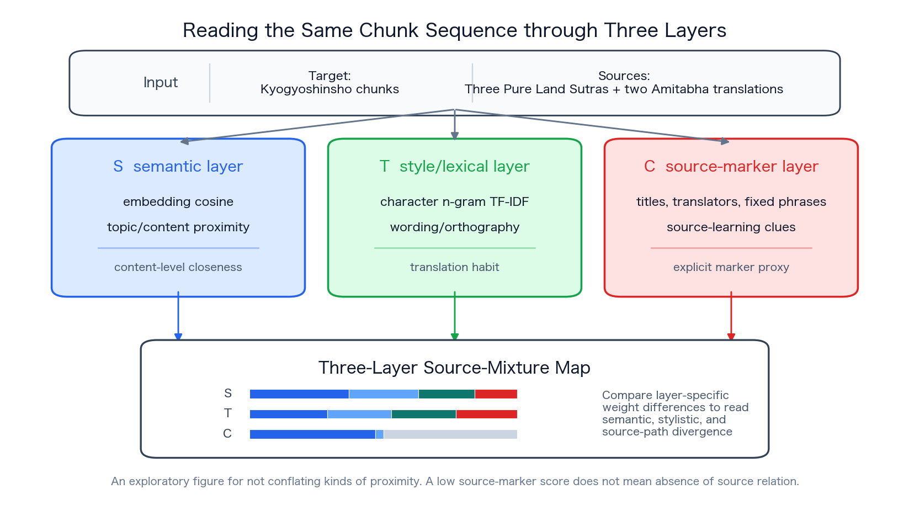
Visualization and Contrastive Experiments
Text vectors, sectarian reference-group centroids, and translator centroids were placed in a shared space and visualized in two dimensions with PCA. The PCA random seed was random_state=0. In the text-mean map, the explained variance of PC1 and PC2 was 23.3% and 18.7%, respectively, for a combined 42.0%. For the two Amitabha Sutra translations, character-level TF-IDF was also computed with character 2-to-5-grams, as a contrastive analysis of lexical and orthographic proximity rather than semantic proximity.
Mean vectors alone hide the internal spread of long scriptures and multi-topic writings. Therefore, major texts were also visualized as chunk-level embeddings with one-standard-deviation ellipses. In the main chunk-distribution figure, the explained variance of PC1 and PC2 was 6.9% and 4.4%, respectively, for a combined 11.4%.
Because overlap in a two-dimensional projection can be distorted, the chunk-neighbor mixing rate was computed in the original high-dimensional embedding space. For two texts A and B, let \(C=A\cup B\) be the combined chunk set. For each chunk \(c\in C\), the top-k neighbors \(N_k(c)\) were found after excluding the chunk itself. The proportion of neighbors in \(N_k(c)\) that belong to the other text is \(r(c)\), and the mixing rate is \(M(A,B)=|C|^{-1}\sum_{c\in C} r(c)\). Unless otherwise noted, \(k=5\).
Multilingual Pilot
The multilingual pilot extracted the 84000 Reading Room English translation The Teaching Explaining the Thought（Toh 106）from HTML and compared it with the SAT Chinese Samdhinirmocana-sutra（解深密經, T0676）. Chinese controls included the Diamond Sutra, Vimalakirti Sutra, Heart Sutra, and Amitabha Sutra. The evaluation used the nearest-neighbor rank of the corresponding Chinese text from the English text vector.
Results
Semantic Placement of Sectarian Reference Texts
Figure 2 shows the PCA map of text vectors and translator centroids. Pure Land reference texts tend to appear near one another in the upper-left direction, and Shingon esoteric scriptures tend to cluster downward. In contrast, Zen scriptures alone did not clearly separate Soto, Rinzai, and Obaku traditions. This does not mean that no sectarian differences exist; it means that the scripture layer used here does not adequately represent those traditions.
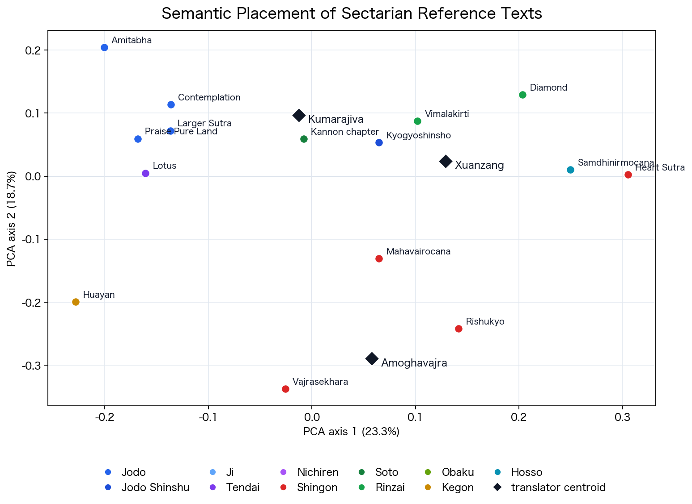
Chunk Distributions and Spread
Figure 3 visualizes chunks rather than text means. Ellipses show the one-standard-deviation range of each text's chunk group. Texts that become single points in a mean-vector map may have internal thematic spread or partial overlap with other texts. Kyogyoshinsho, which contains quotations and doctrinal synthesis, has a particularly wide chunk distribution.
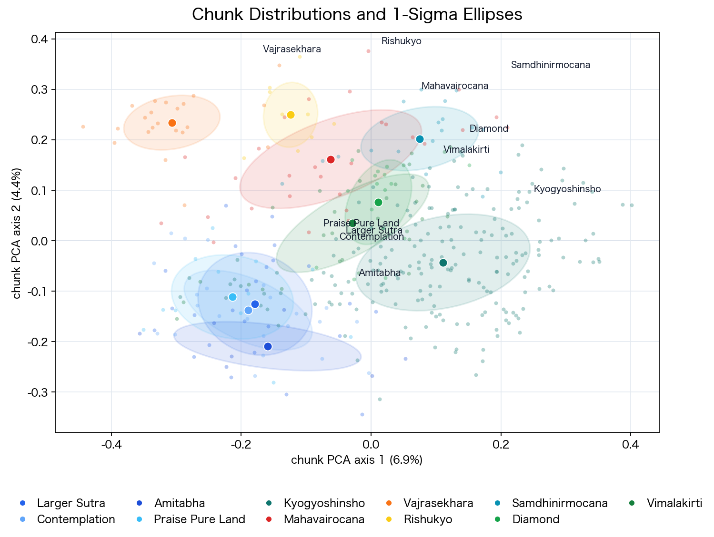
Figure 4 shows representative local PCA panels. The two Amitabha Sutra translations overlap not only in mean vectors but also in chunk distributions. Other groups, such as esoteric texts or Prajnaparamita/Hosso/Zen controls, show cases where mean proximity and distribution shape do not coincide.
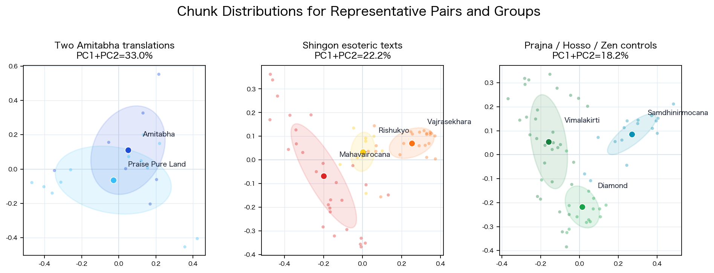
Figure 5 shows the high-dimensional chunk-neighbor mixing rate. A higher value means that chunks from the other text more often appear among a chunk's nearest neighbors. The two Amitabha Sutra translations have a high value of 0.37, indicating distributional mixing across translations. Pairs with larger thematic differences, such as the Amitabha Sutra and the Rishukyo, show low mixing.
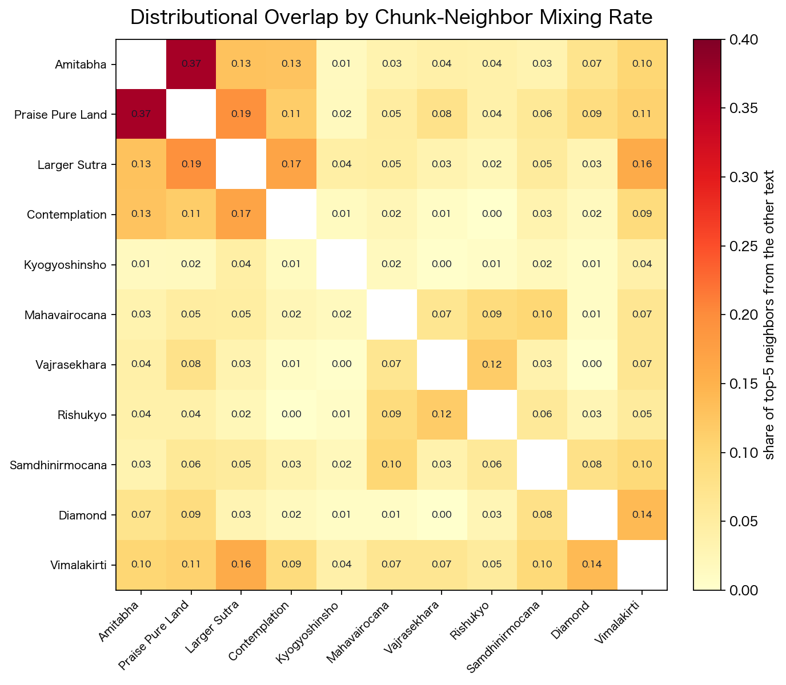
Figure 6 compares text-mean similarity and chunk-neighbor mixing. The two Amitabha Sutra translations appear in the upper-right: their mean vectors are close and their chunks mix strongly. Kyogyoshinsho and the Three Pure Land Sutras are close in mean-vector similarity, but their chunk-neighbor mixing is lower. This reflects the composite nature of Kyogyoshinsho: it is grounded in the Three Pure Land Sutras but contains quotations, exegesis, and doctrinal exposition, so not all chunks mix uniformly with sutra chunks.
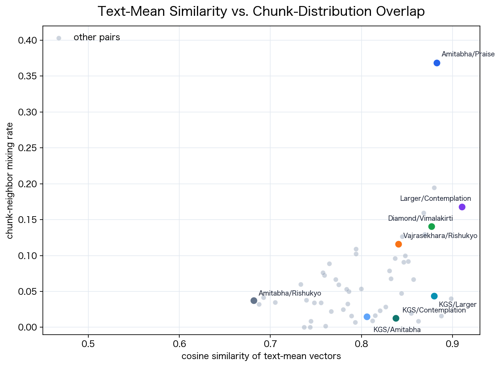
| top-k | Observed mixing | Rank among 55 pairs | Complete-mixing mean | 95% range |
|---|---|---|---|---|
| 1 | 0.1579 | 1 | 0.4897 | 0.2105–0.7368 |
| 3 | 0.2632 | 1 | 0.4911 | 0.3333–0.6140 |
| 5 | 0.3684 | 1 | 0.4911 | 0.3787–0.5789 |
| 10 | 0.4474 | 1 | 0.4908 | 0.4263–0.5421 |
Across \(k=1,3,5,10\), the two Amitabha Sutra translations rank first among the 55 compared pairs. However, the label-randomized complete-mixing reference distribution has a higher mean than the observed values. This reference distribution should not be read as an ordinary significance test; it indicates what complete label mixing would look like if labels were independent of semantic structure. The main interpretation therefore rests on relative rank and top-k sensitivity among real text pairs.
| Pair | Nearest chunk pair | Chunk sim. | Text sim. | Mixing |
|---|---|---|---|---|
| Amitabha/Praise | T0366 0005 / T0367 0010 | 0.7672 | 0.8825 | 0.3684 |
| KGS/Larger Sutra | KGS 0002 / T0360 0004 | 0.7969 | 0.8797 | 0.0438 |
| KGS/Contemplation | KGS 0088 / T0365 0002 | 0.7095 | 0.8375 | 0.0127 |
| KGS/Amitabha | KGS 0098 / T0366 0005 | 0.7250 | 0.8058 | 0.0147 |
| Larger/Contemplation | T0360 0021 / T0365 0008 | 0.7660 | 0.9102 | 0.1680 |
| Vajrasekhara/Rishukyo | T0865 0000 / T0243 0000 | 0.8176 | 0.8405 | 0.1161 |
| Diamond/Vimalakirti | T0235 0004 / T0475 0022 | 0.7235 | 0.8770 | 0.1404 |
| Amitabha/Rishukyo | T0366 0005 / T0243 0007 | 0.5900 | 0.6816 | 0.0375 |
For Kyogyoshinsho and the Three Pure Land Sutras, bridge-chunk similarities are high, roughly 0.71 to 0.80. Partial correspondence with the sutras is therefore visible, but the low mixing rate shows that the whole Kyogyoshinsho distribution does not simply become identical with the sutra distributions.
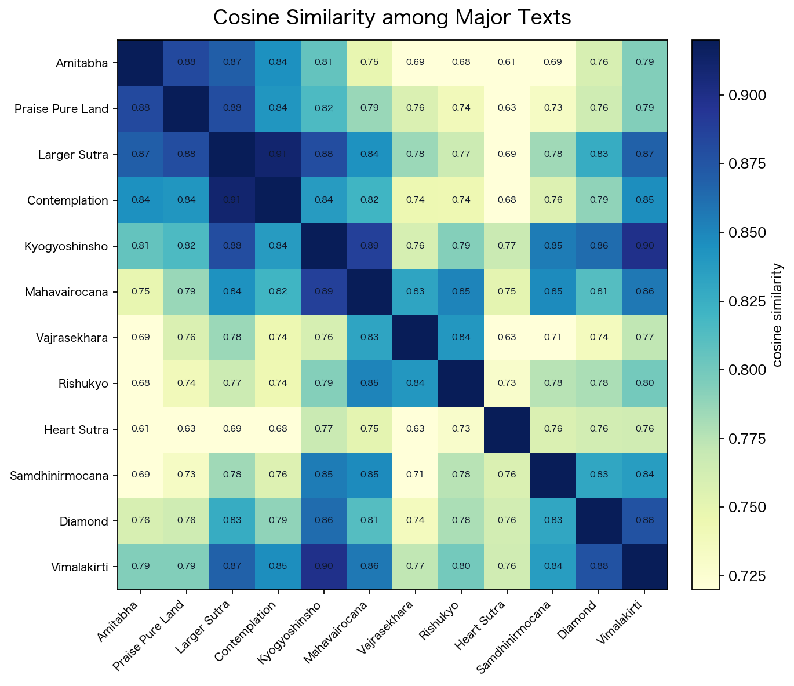
The Two Amitabha Sutra Translations
Kumarajiva's 佛説阿彌陀經（T0366）and Xuanzang's 稱讃淨土佛攝受經（T0367）show high similarity in semantic embeddings but low similarity in character-level TF-IDF (Figure 9). In the three-layer framework, they are a baseline case: they correspond strongly in the semantic layer while remaining distant in the stylistic/lexical layer.
Figure 8 recomputes three indicators for the two translations in the sectarian reference corpus. The text-mean vector similarity is high (0.8825). The character n-gram TF-IDF similarity for the same texts is only 0.1833. The chunk-neighbor mixing rate is 0.3684, the highest among the compared pairs. Thus, the two translations show same-content proximity in the semantic and distributional layers, while translation and orthographic differences remain visible in the stylistic/lexical layer.
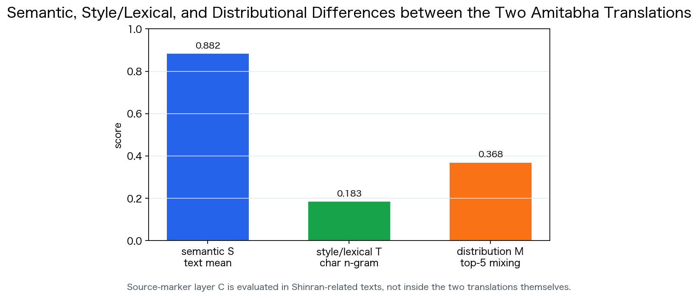
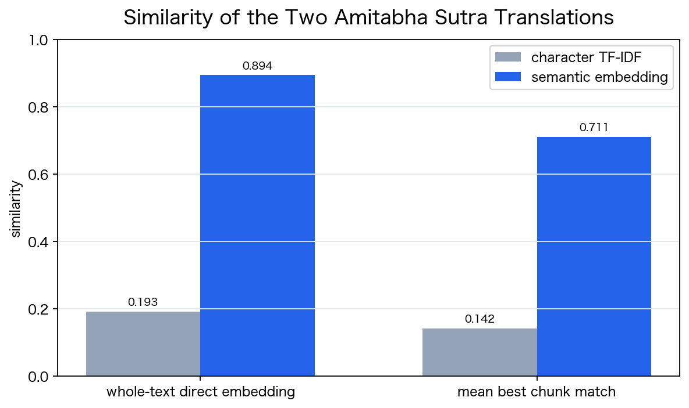
| Metric | Value | Description |
|---|---|---|
| Whole-text direct embedding similarity | 0.8943 | Value from an earlier small experiment embedding each translation as one input. |
| Chunk-mean vector similarity | 0.8825 | Main-analysis value from mean vectors of chunk embeddings. |
| Mean best chunk match | 0.7108 | Average proximity based on chunk-level correspondence. |
| Character TF-IDF whole-text similarity | 0.1928 | Lexical/orthographic similarity by character n-grams. |
| Character TF-IDF mean best chunk match | 0.1424 | Chunk-level lexical proximity. |
| Neighbor text | Cosine similarity |
|---|---|
| 稱讃淨土佛攝受經 | 0.8825 |
| Larger Sutra | 0.8694 |
| Contemplation Sutra | 0.8446 |
| Lotus Sutra excerpt | 0.8275 |
| Kyogyoshinsho | 0.8058 |
The Two Amitabha Translations in Shinran's Writings
Which Chinese Amitabha translation, or which commentarial tradition, Shinran relied on cannot be determined by semantic embeddings alone. Kumarajiva's and Xuanzang's versions are close in content, and embeddings strongly reflect that closeness. This paper therefore separates three kinds of evidence: explicit scripture and translator names, phrases that lean toward one translation, and semantic nearest-neighbor relations between Kyogyoshinsho chunks and the two translations.
Figure 10 shows source indicators in Shinran-related texts. On the examined Nyushutsu Nimonge page, Praise of the Pure Land and Xuanzang are explicitly named, and phrase indicators corresponding to Xuanzang's praise motif are also detected. In Kyogyoshinsho, phrases leaning toward Kumarajiva and references to Xuanzang's sutra title coexist. It is therefore better to read Kyogyoshinsho as a composite text in which the Three Pure Land Sutras, different translations, and commentarial traditions overlap, rather than assigning it to one translation alone.
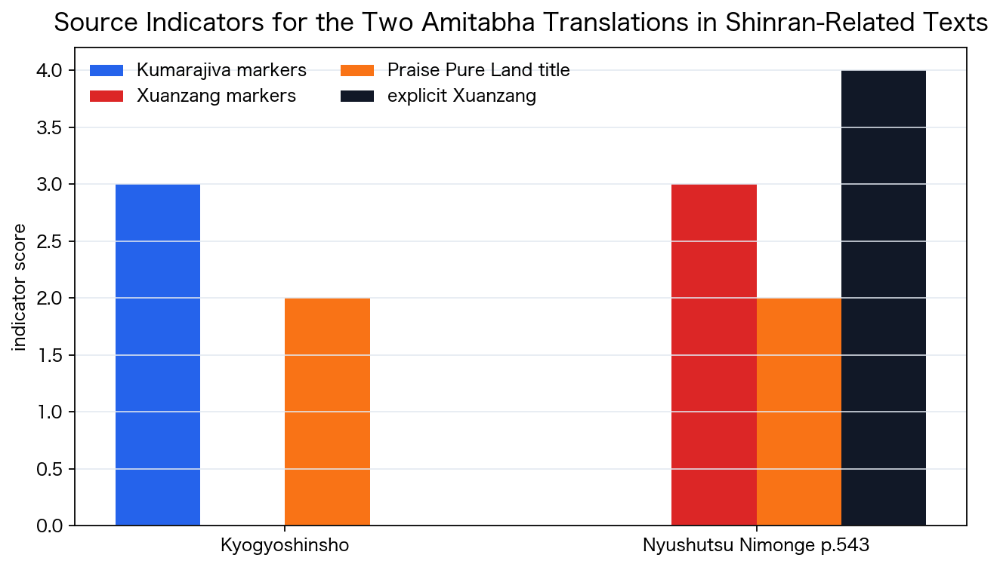
The text-mean vector similarity from Kyogyoshinsho is 0.8058 to Kumarajiva's Amitabha Sutra and 0.8152 to Xuanzang's Praise of the Pure Land. Xuanzang's version is slightly higher, but the difference is only 0.0094. The chunk-level curve in Figure 11 also shows that proximity to the two translations alternates through the text, reflecting the mixture of sutra quotation, exegesis, founder citation, and doctrinal exposition.
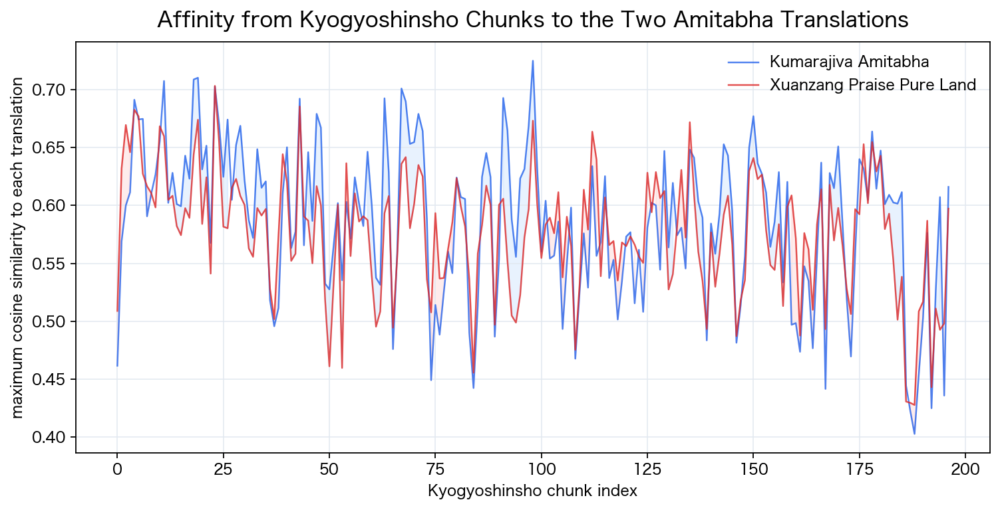
| Target | Kumarajiva side | Xuanzang side | Interpretation |
|---|---|---|---|
| Kyogyoshinsho | Characteristic phrases; chunk max 0.7250 | Title reference; text mean 0.8152 | Both translations and commentarial traditions overlap. |
| Nyushutsu Nimonge p.543 | Not prominent | Explicitly names Praise of the Pure Land and Xuanzang | Strong evidence for Xuanzang reference. |
| Amitabha-kyo Shitchu | Not included | Not included | Priority material for the next stage. |
The point of this small experiment is not to solve the two-translation problem by asking which translation is semantically closer. Embeddings capture the same-content relation of the two translations, but they blur differences in wording and citation paths. For Shinran-related source analysis, embedding neighbors should be used as an entry point, and scripture names, translator names, fixed phrases, and commentarial quotations should be overlaid as separate layers.
Figure 12 is the central trial result of this paper. It shows a three-layer source-mixture map for 197 chunks of Kyogyoshinsho, comparing them with the Larger Sutra, the Contemplation Sutra, Kumarajiva's Amitabha Sutra, and Xuanzang's Praise of the Pure Land. The same Kyogyoshinsho chunk sequence produces different source mixtures in the semantic, stylistic/lexical, and source-marker layers. Volume boundaries for the preface, Teaching, Practice, Faith, Realization, True Buddha and Land, and Transformed Buddha and Land fascicles are added from headings in the text. Because fixed-length chunks are used, boundary chunks are approximate and do not correspond to natural paragraph or fascicle units.
| Layer | Unmarked | Larger Sutra | Contemplation | Kumarajiva Amitabha | Xuanzang Praise |
|---|---|---|---|---|---|
| Semantic | – | 0.3705 | 0.2642 | 0.2135 | 0.1517 |
| Stylistic/lexical | – | 0.2942 | 0.2402 | 0.2369 | 0.2288 |
| Source-marker | 0.4958 | 0.4659 | 0.0303 | 0.0025 | 0.0054 |
![Three-layer source-mixture map for Kyogyoshinsho. The upper panel is the semantic layer based on embedding similarity, the middle panel the stylistic/lexical layer based on character n-gram TF-IDF, and the lower panel the source-marker layer based on scripture-title, translator-name, and fixed-phrase dictionaries. Weights are relative within each layer. In the semantic and stylistic/lexical layers, all weight is necessarily distributed among the four reference sources; the largest weight is not therefore a true source attribution.](../../figures/en/kyogyoshinsho-three-layer-source-mixture.png)
In the semantic layer, the Larger Sutra is the largest source in every volume. In the Teaching, Realization, and True Buddha and Land fascicles, its weight is especially high. In the Practice, Faith, and Transformed Buddha and Land fascicles, the Contemplation Sutra and the two Amitabha translations also occupy nontrivial portions. This should be compared with traditional readings of the volume structure; the computation alone does not determine the doctrinal character of each fascicle.
In the source-marker layer, the Teaching, Practice, and Realization fascicles are dominated by Larger Sutra markers, whereas the Faith, True Buddha and Land, and Transformed Buddha and Land fascicles are dominated by the unmarked category. This does not mean that those fascicles lack source relations. Rather, it suggests that many arguments, interpretations, and citation paths cannot be recovered by fixed phrases, scripture titles, and translator names alone.
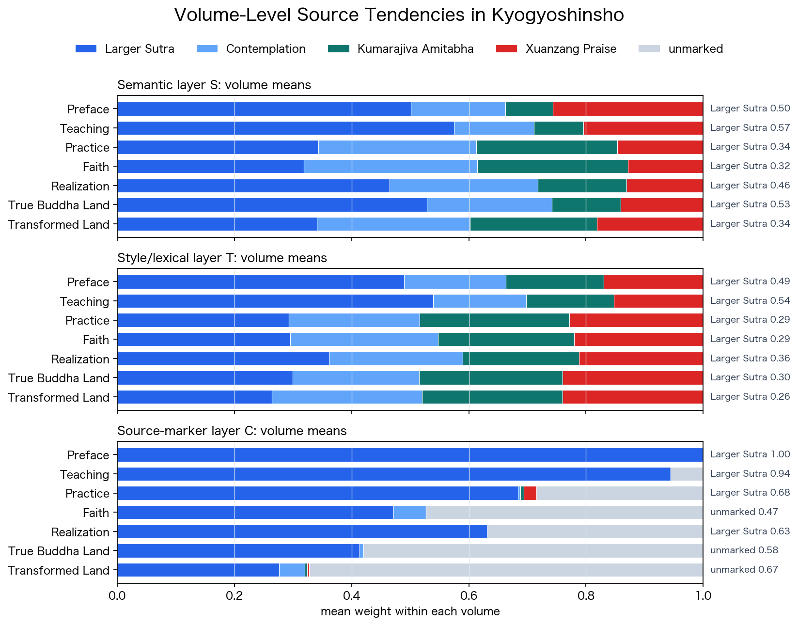
| Volume | Chunk range | Semantic max | Stylistic/lexical max | Source-marker max |
|---|---|---|---|---|
| Preface | 0000–0000 | Larger 0.5008 | Larger 0.4899 | Larger 1.0000 |
| Teaching | 0001–0002 | Larger 0.5744 | Larger 0.5390 | Larger 0.9444 |
| Practice | 0003–0041 | Larger 0.3436 | Larger 0.2927 | Larger 0.6840 |
| Faith | 0042–0095 | Larger 0.3188 | Larger 0.2950 | Unmarked 0.4733 |
| Realization | 0096–0111 | Larger 0.4648 | Larger 0.3618 | Larger 0.6319 |
| True Buddha Land | 0112–0134 | Larger 0.5287 | Larger 0.2992 | Unmarked 0.5797 |
| Transformed Land | 0135–0196 | Larger 0.3408 | Larger 0.2640 | Unmarked 0.6720 |
Translator Centroids
Translator centroids were created for Amoghavajra, Xuanzang, and Kumarajiva. The nearest texts to Xuanzang's Praise of the Pure Land were not other Xuanzang translations such as the Heart Sutra or Samdhinirmocana-sutra, but Kumarajiva's Amitabha Sutra and other Pure Land texts. In this small corpus, semantic proximity is controlled more strongly by theme and content than by translator. Translator-style detection will require more near-topic translation pairs and separate stylistic features.
| Translator | Text count | Texts |
|---|---|---|
| Amoghavajra | 2 | Vajrasekhara, Rishukyo |
| Xuanzang | 3 | Praise Pure Land, Heart Sutra, Samdhinirmocana |
| Kumarajiva | 5 | Amitabha, Lotus, Kannon, Diamond, Vimalakirti |
Multilingual Pilot
Using the 84000 English The Teaching Explaining the Thought（Toh 106）as the query text, cosine similarity was computed against Chinese texts. Table 11 shows the nearest neighbors.
| Rank | Neighbor text | Cosine similarity |
|---|---|---|
| 1 | 解深密經（T0676） | 0.7662 |
| 2 | 維摩詰所説經（T0475） | 0.6926 |
| 3 | 金剛般若波羅蜜經（T0235） | 0.6922 |
| 4 | 般若波羅蜜多心經（T0251） | 0.6167 |
| 5 | 佛説阿彌陀經（T0366） | 0.5683 |
For the Toh 106/T0676 pair, the nearest Chinese text to the 84000 English translation is the corresponding Chinese Samdhinirmocana-sutra. This is not a general evaluation of multilingual performance; it is a small pilot suggesting that the three-layer mapping framework can be extended toward multilingual exploration. Vimalakirti and Diamond Sutra controls also appear in the 0.69 range, reflecting broader Mahayana thematic proximity. Future evaluation requires more corresponding and non-corresponding pairs and metrics such as top-1 accuracy, MRR, and ROC-AUC.
Discussion
The two Amitabha translations show that semantic embeddings can capture content similarity across lexical and translation differences. This is promising for detecting same-content or near-content Chinese translations. At the same time, character-level TF-IDF gives a low score for the same pair, because vocabulary, wording, proper-name forms, and orthography remain visible in character n-gram features.
This result connects embedding-based Buddhist studies and stylometric work on Chinese Buddhist translations. Semantic embeddings may extend the word- and concept-level exploration discussed by Huang and Wang[26] to texts and chunks. Translator and period differences, however, still require character features, particles, function words, PCA, and clustering of the kind used by Hung, Bingenheimer, and Wiles and by Bingenheimer, Hung, and Hsieh[24, 25].
Chunk distributions refine the interpretation of mean-vector proximity. The two Amitabha translations have close mean vectors and high chunk-neighbor mixing, suggesting strong local correspondence. By contrast, Kyogyoshinsho is close to the Three Pure Land Sutras in mean-vector space but less mixed at the chunk level, because it combines quotation, commentary, and doctrinal argument.
Pure Land and Shingon input groups show some thematic clustering, but this is not a classification of sects themselves. It is a visualization of the thematic proximity of selected reference texts. Founder writings such as Kyogyoshinsho may behave differently from single sutras because they synthesize many sources.
For Zen, scriptures alone did not separate sectarian traditions. This is better read as a data-layer problem than as a negative result about Zen. Comparing Zen traditions requires records of sayings, koan collections, monastic rules, and founder texts such as Blue Cliff Record, Gateless Gate, Shobogenzo, Record of Linji, and Obaku regulations.
Translator style should be studied with features separate from semantic vectors: character n-grams, particles and function words, sentence length, phrase structure, fixed translation equivalents, transcription versus semantic translation, and variation in Chinese renderings of the same Sanskrit terms.
The analysis therefore needs three layers. First is a semantic map for content, topic, and doctrinal proximity. Second is a stylistic/lexical map for wording, particles, phrase patterns, transcription terms, orthography, and sentence form. Third is a source-marker map for scripture names, translator names, fixed phrases, commentarial quotations, and founder-text references. The Kyogyoshinsho source-mixture map operationalizes this three-layer distinction.
The analysis of Amitabha sources in Shinran's writings illustrates the same problem. A text such as Nyushutsu Nimonge, which explicitly names Xuanzang's Praise of the Pure Land, provides strong evidence through names themselves. A composite work such as Kyogyoshinsho, however, cannot be decomposed automatically by semantic vectors alone. The three-layer map treats this limitation not simply as failure but as an interpretable difference among layers.
The source-marker map can connect with prior work on parallel-passage detection and intertextuality[27, 30]. This paper does not implement large-scale parallel-passage detection. Rather, it offers a way to identify which text relations should be examined more carefully with such tools.
The multilingual pilot suggests that semantic embeddings may recover same-text relations across languages. But the present experiment uses an English translation from 84000, not Tibetan text itself. Future work should jointly compare Tibetan, Chinese, and English in order to separate same-text identity, same-language effects, and translation style.
Limitations and Future Work
The corpus is small. Some large scriptures are not complete. Sectarian centroids are simple means. Translator centroids have few samples. PCA is only a visualization. Chunk ellipses are approximations in two-dimensional projection and should be supplemented with high-dimensional nearest-neighbor and distributional measures.
The three-layer source-mixture map is also preliminary. The stylistic/lexical layer is an initial character n-gram TF-IDF operationalization; it does not yet include particles, function words, sentence length, syntax, or fixed translation equivalents in a systematic way. The source-marker layer depends on a small dictionary, and an unmarked chunk does not mean absence of source relation. The semantic and stylistic/lexical layers distribute all weight among four sources and do not yet estimate an ``other'' category. The multilingual comparison is a one-English-text pilot; Tibetan text, chapter-level alignment, and multiple scripture families remain untested.
Future work should obtain stable full texts from SAT, add founder writings, records of sayings, ritual texts, and commentaries for each tradition, and build a separate stylistic vector space for translator, period, and Japanese kanbun features. Chunking should be compared between fixed windows and natural units such as fascicles, chapters, and paragraphs. Sectarian centroids should be weighted by scripture, liturgical, and founder-text status. The source-mixture map could be extended toward unbalanced optimal transport or chunk-transport maps with positional penalties for chapters and fascicles.
For Shinran's understanding of the Amitabha Sutra, the next priority is Amidakyo Shitchu（阿弥陀経集註）. It should not be embedded as a single undifferentiated text. Sutra text, interlinear notes, verso notes, and likely cited commentaries should be separated. Reference sources should include Kumarajiva, Xuanzang, Yuanzhao's Amitabha Sutra Commentary, Shandao-related texts, and Fazhao-related texts.
Conclusion
This preliminary experiment shows that semantic embeddings recover the proximity of same-content or near-content texts such as the two Amitabha Sutra translations and the thematic grouping of some Pure Land and Shingon scriptures. Representing texts as chunk distributions rather than only as mean points makes it possible to inspect internal spread and partial overlap. Combining mean-vector similarity and chunk-neighbor mixing distinguishes whole-text thematic proximity from local distributional overlap. In the Toh 106/T0676 pilot, the nearest Chinese text to the 84000 English translation is the corresponding Chinese text.
At the same time, semantic embeddings alone are insufficient for translator style and sectarian tradition. Translator habits require stylistic features such as character n-grams, translation-term correspondences, particles, and syntax. The present contribution is not a finished sect classifier but a basis for a three-layer exploratory map of Buddhist texts. Its distinctive point is to connect Japanese sectarian reference sets, the two Amitabha Sutra translations, Shinran's writings, chunk distributions, and a multilingual pilot within one framework, and to treat differences among semantic, stylistic/lexical, and source-marker layers as objects of interpretation.
Appendix: Terms, Models, and Tools
This appendix summarizes implementation terms needed to read the experiment. It describes how these terms are used here; tool specifications, availability, and pricing may change.
Corpus: A corpus is a collection of texts assembled for analysis. This paper uses small corpora of SAT Chinese Buddhist texts, Shinran writings from the Seikyo DB, and 84000 English translation material.
Preprocessing and normalization: Preprocessing includes extracting text from HTML and removing extra whitespace or interface text. Normalization aligns variant characters, punctuation, editorial marks, and spelling variants. This paper uses only basic preprocessing for semantic embeddings.
Token: A token is the unit used internally by a model or tokenizer. It is not identical to a character, word, or morpheme. Tokens are used here to create chunks of comparable length.
tiktoken and cl100k_base: tiktoken is OpenAI's Python tokenizer, and cl100k_base is one of the encodings used with OpenAI models[13]. It was used to split kanbun text into roughly 700-token chunks.
Chunks and overlap: A chunk is a segment of a longer text short enough for the embedding model. This experiment uses 700-token chunks with 100-token overlap.
Embeddings and text-embedding-3-large: An embedding is a high-dimensional vector representation of a text. This paper uses OpenAI's text-embedding-3-large[12]. Use requires an OpenAI API key and the Python OpenAI SDK.
Embedding space: The high-dimensional space in which text or chunk vectors are placed. Proximity in this space suggests semantic or thematic proximity, but it does not prove philological identity, quotation, or source relation.
Cosine similarity: A measure of whether two vectors point in similar directions. It is used here to compare embeddings.
Centroid: A working representative point produced by averaging multiple text vectors. A sectarian reference-group centroid is not the doctrinal center of a sect; it is the mean of selected reference texts.
PCA: Principal Component Analysis, used here to project high-dimensional vectors into two dimensions for visualization[19, 20].
TF-IDF and character n-grams: TF-IDF is a classical weighting method for text comparison[18]. Character n-grams are used here to inspect lexical and orthographic proximity separately from semantic proximity.
Stylometry: Statistical analysis of style through characters, words, particles, sentence length, syntax, and related features. It is treated here as a necessary layer beyond semantic embeddings.
Top-k neighbors and chunk-neighbor mixing rate: Top-k neighbors are the k most similar chunks to a given chunk. The mixing rate is the average proportion of top-k neighbors that belong to the other text when two texts' chunks are combined.
Three-layer source-mixture map: A visualization that shows how each target chunk relates to multiple reference sources as a mixture of weights, separated into semantic, stylistic/lexical, and source-marker layers.
Softmax: A function that converts multiple scores into weights summing to one. In this paper it converts source similarities into source-mixture weights.
Optimal transport and unbalanced optimal transport: Methods for mapping one distribution to another with minimal cost. They are future candidates for chunk-transport maps where some chunks may remain unmatched.
SAT, Seikyo DB, and 84000: SAT is the Taisho Shinshu Daizokyo Text Database; the Seikyo DB is the Jodo Shinshu Seiten database of the Jodo Shinshu Hongwanji-ha Research Institute; and 84000 provides English translations of Tibetan Buddhist texts. Source texts from these providers are not redistributed in the public data.
Author Responsibility and Scope of AI Assistance
The author of this paper is Daishin Ueyama. Because the project is also a prototype of AI-assisted humanities data-analysis paper production, the scope of AI assistance is stated explicitly. Recent publication ethics guidelines generally state that AI tools and large language models cannot be treated as authors because they cannot take responsibility for accuracy, integrity, originality, and final approval[14, 15, 16]. Contributor-role taxonomies such as CRediT are also widely used to clarify research contributions[17].
Daishin Ueyama was responsible for the overall conception, research questions, selection of sources, Buddhist-studies interpretation, reading of results, publication policy, and final content review. In CRediT terms, this corresponds mainly to Conceptualization, Resources, Supervision, Validation, Writing–review & editing, and Project administration. Final responsibility for the paper rests with Daishin Ueyama.
Codex GPT-5.5 xhigh, under Ueyama's instruction and review, supported implementation of scripts, text acquisition and preprocessing, the embedding pipeline, computation and organization of results, visualization, HTML/PDF generation, Git-based change recording, drafting, revision, and verification. In CRediT-like terms, this support corresponds to parts of Software, Data curation, Formal analysis, Visualization, Writing–original draft, and Writing–review & editing. Codex is not an author or co-author.
ChatGPT 5.5 Pro xhigh was used in the role of a reviewer, offering advice on problem framing, relation to prior work, originality, limitations, the explanation of the three-layer map, and wording for public release. These suggestions were selected and incorporated through Codex-assisted revision and Ueyama's judgment. AI-generated or AI-revised sentences, figures, code, and references remain materials requiring human verification; AI outputs are not treated as primary sources.
Acknowledgements
During revision, ChatGPT 5.5 Pro xhigh was used in a reviewer role and provided useful comments on problem framing, relation to prior work, reproducibility, and limitations. The author gratefully acknowledges this assistance.
References
- SAT Daizokyo Text Database Committee, SAT Taisho Shinshu Daizokyo Text Database, https://21dzk.l.u-tokyo.ac.jp/SAT/ (accessed June 2, 2026)
- CBETA, CBETA Online, https://cbeta.org/ (accessed June 2, 2026)
- Buddhist Digital Resource Center, Buddhist Digital Resource Center, https://www.bdrc.io/ (accessed June 2, 2026)
- Jodo Shinshu Hongwanji-ha Research Institute, Jodo Shinshu Seiten Seikyo Database, https://j-soken.jp/ask/10831 (accessed June 2, 2026)
- Jodo Shinshu Hongwanji-ha Research Institute, Seikyo Database usage notes, https://j-soken.jp/ask/ask_5/640 (accessed June 2, 2026)
- Shinshu Seiten Search Site, Nyushutsu Nimonge, https://shinshuseiten.higashihonganji.or.jp/contents.html?id=2&page=543 (accessed June 2, 2026)
- Nagoya University Digital Archive, Kan Muryoju-kyo Shitchu with Amidakyo Shitchu, https://da.adm.thers.ac.jp/item/n004-20230901-00882 (accessed June 2, 2026)
- Ryusei Chiba, ``On Quotations from Yuanzhao's Amitabha Sutra Commentary in Shinran's Amidakyo Shitchu,'' 2014, https://buddhism.lib.ntu.edu.tw/jp/search/search_detail.jsp?seq=546211 (accessed June 2, 2026)
- Jodoshu, Entry on Shosan Jodo Butsu Shoujukyo, https://jodoshuzensho.jp/daijiten/index.php/%E7%A7%B0%E8%AE%83%E6%B5%84%E5%9C%9F%E4%BB%8F%E6%91%82%E5%8F%97%E7%B5%8C (accessed June 2, 2026)
- 84000: Translating the Words of the Buddha, The Teaching Explaining the Thought, Toh 106, https://read.84000.co/translation/toh106.html (accessed June 2, 2026)
- 84000: Translating the Words of the Buddha, Terms of Use, https://www.84000.co/documents/terms-of-use (accessed June 2, 2026)
- OpenAI, Embeddings, OpenAI Platform Documentation, https://platform.openai.com/docs/guides/embeddings (accessed June 2, 2026)
- OpenAI, tiktoken, https://github.com/openai/tiktoken (accessed June 2, 2026)
- International Committee of Medical Journal Editors, ``Use of AI by Authors,'' https://www.icmje.org/recommendations/browse/artificial-intelligence/ai-use-by-authors.html (accessed June 2, 2026)
- Elsevier, ``The use of AI and AI-assisted technologies in writing for Elsevier,'' https://www.elsevier.com/about/policies-and-standards/the-use-of-generative-ai-and-ai-assisted-technologies-in-writing-for-elsevier (accessed June 2, 2026)
- Springer Nature, ``Artificial Intelligence (AI),'' https://link.springer.com/brands/springer/journal-policies (accessed June 2, 2026)
- National Information Standards Organization, ``CRediT: Contributor Role Taxonomy,'' https://credit.niso.org/ (accessed June 2, 2026)
- Gerard Salton and Christopher Buckley, ``Term-weighting approaches in automatic text retrieval,'' Information Processing & Management, 24(5):513–523, 1988
- I. T. Jolliffe, Principal Component Analysis, Springer, 2nd edition, 2002
- Fabian Pedregosa et al., ``Scikit-learn: Machine Learning in Python,'' Journal of Machine Learning Research, 12:2825–2830, 2011
- John F. Burrows, ``Delta'': a Measure of Stylistic Difference and a Guide to Likely Authorship, Literary and Linguistic Computing, 17(3):267–287, 2002, https://doi.org/10.1093/llc/17.3.267
- Moshe Koppel, Jonathan Schler, and Shlomo Argamon, ``Computational Methods in Authorship Attribution,'' Journal of the American Society for Information Science and Technology, 60(1):9–26, 2009, https://doi.org/10.1002/asi.20961
- Seishi Karashima, A Glossary of Kumarajiva's Translation of the Lotus Sutra, The International Research Institute for Advanced Buddhology, Soka University, 2001, https://glossaries.dila.edu.tw/glossaries/KKJ?locale=en (accessed June 2, 2026)
- Jen-Jou Hung, Marcus Bingenheimer, and Simon Wiles, ``Quantitative Evidence for a Hypothesis regarding the Attribution of Early Buddhist Translations,'' Literary and Linguistic Computing, 25(1):119–134, 2010, https://doi.org/10.1093/llc/fqp036
- Marcus Bingenheimer, Jen-Jou Hung, and Cheng-en Hsieh, ``Stylometric Analysis of Chinese Buddhist Texts: Do Different Chinese Translations of the Gandavyuha Reflect Stylistic Features that are Typical for their Age?'' Journal of the Japanese Association for Digital Humanities, 2(1):1–30, 2017, https://doi.org/10.17928/jjadh.2.1_1
- Shu-Ling Huang and Yu-Chun Wang, ``Word Embedding in Buddhist Studies: On the Basis of Evaluation of Word Embedding Models,'' Journal of Digital Archives and Digital Humanities, 12:43–82, 2023, https://doi.org/10.6853/DADH.202310_(12).0003
- Sebastian Nehrdich, ``A Method for the Calculation of Parallel Passages for Buddhist Chinese Sources Based on Million-scale Nearest Neighbor Search,'' Journal of the Japanese Association for Digital Humanities, 5(2):132–153, 2020, https://doi.org/10.17928/jjadh.5.2_132
- Rafal Felbur, Marieke Meelen, and Paul Vierthaler, ``Crosslinguistic Semantic Textual Similarity of Buddhist Chinese and Classical Tibetan,'' Journal of Open Humanities Data, 8:23, 2022, https://doi.org/10.5334/johd.86
- Ligeia Lugli, Matej Martinc, Andraz Pelicon, and Senja Pollak, ``Embeddings Models for Buddhist Sanskrit,'' In Proceedings of the Thirteenth Language Resources and Evaluation Conference, pages 3861–3871, 2022, https://aclanthology.org/2022.lrec-1.411/
- Dharmamitra, DharmaNexus, https://dharmamitra.org/nexus (accessed June 2, 2026)
- Sebastian Nehrdich et al., ``MITRA: A Large-Scale Parallel Corpus and Multilingual Pretrained Language Model for Machine Translation and Semantic Retrieval for Pali, Sanskrit, Buddhist Chinese, and Tibetan,'' arXiv preprint arXiv:2601.06400, 2026, https://arxiv.org/abs/2601.06400